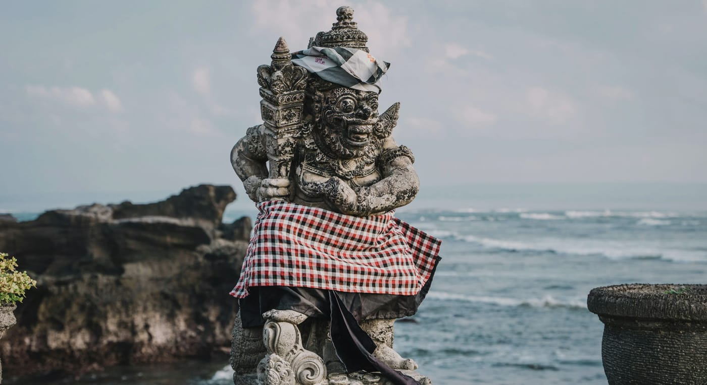

What You'll Do

Watersports at Tanjung Benoa
Start the day out on the water at Tanjung Benoa, Bali's watersport hub. Pick from jet ski, banana boat, parasailing, or a glass-bottom boat over to Turtle Island. Gear and instructors are on hand, so first-timers are welcome. A fun, splashy way to kick things off.

Garuda Wisnu Kencana (GWK)
One of the tallest statues on earth - Lord Vishnu riding the mythical Garuda, standing 121 metres above a limestone cultural park. Taller than the Statue of Liberty, and it took 28 years to finish. Impressive up close in a way photos never quite capture.

Pandawa Beach
Once called "Secret Beach" because it was hidden behind a limestone ridge, now reached through a dramatic cut in the cliff lined with giant carved statues. Calm water, wide sand, and space to actually breathe. A good swim stop before lunch.

Melasti Beach
You reach it by driving down a road carved straight through a limestone cliff - the approach alone is worth it. At the bottom: turquoise water, white sand, and towering white walls on either side. One of the cleanest beaches in the south, and a relaxed way to end the day.